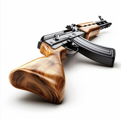
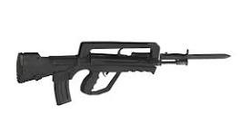
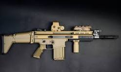

Rifles are versatile, long-barreled firearms designed for precision, range, and power. Used extensively by military forces, law enforcement, and civilian marksmen, rifles offer superior accuracy due to their rifled barrels, which stabilize bullets in flight. From classic bolt-action models to modern automatic assault rifles, they serve a wide range of combat and tactical purposes. Rifles are essential tools in both close-quarters operations and long-distance engagements, combining rugged durability with advanced firepower to meet the demands of modern warfare. Rifles are also used in hunting, sport shooting, and law enforcement. Civilian versions of tactical rifles are often modified for safety and legal compliance but retain many of the core features that make them effective and efficient. The evolution of rifles over time—from muzzle-loaded muskets to high-tech modular weapon systems—reflects advancements in metallurgy, ballistics, and battlefield tactics.

AK-47
$350
A widely used assault rifle known for its reliability.

M4 Carbine
$900
A lightweight and versatile weapon used by U.S. forces.

Heckler & Koch G36
$1,200
Modern German assault rifle known for accuracy and reliability.

FAMAS
$850
French bullpup assault rifle with a high rate of fire.

Steyr AUG
$1,100
Compact bullpup rifle popular for its modular design.

FN SCAR
$2,000
Highly modular rifle used by U.S. special forces worldwide.